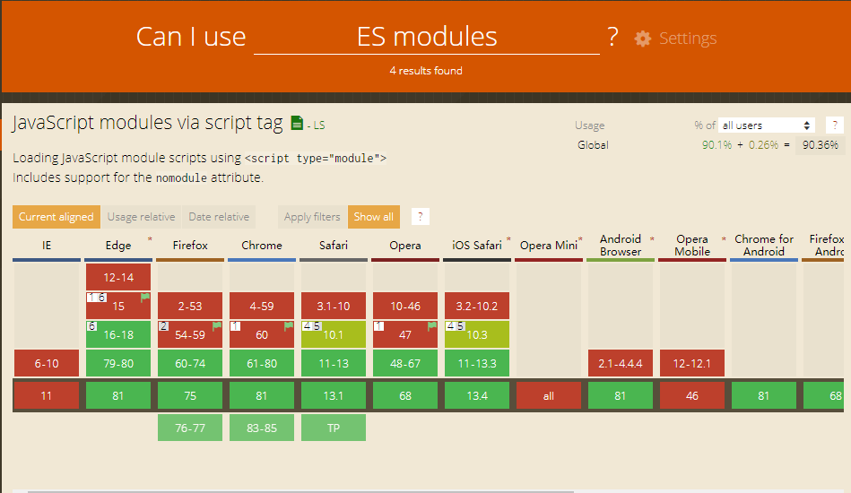

基本概念
systemjs是一个模块加载器，目前主流浏览器，如最新的chrome已经能很好的支持es module，并且对es6语法做了很多的优化，而我们在编写业务代码时一般使用es6语法，如果用babel进行转义一方面会使得代码的体积变大，另一方面也浪费了部分浏览器对最新语法的支持。所以我们采取的思路是支持es module的使用最新的语法，不支持的用babel进行编译，systemjs做模块加载。
script标签的type=module属性可以让浏览器在支持es module条件下下载执行标签下的脚本，type=nomodule属性让不支持es module的浏览器走另外的分支。
// 不支持esmodule
<script type="nomodule">
</script>
<script type="module">
</script>
esmodule浏览器支持率

用法
对脚本进行babel编译
@babel/core, @babel/cli, @babel/plugin-transform-modules-systemjs
// .babelrc
{
"plugins": ["@babel/plugin-transform-modules-systemjs"]
}
es6版本
// index.js
export const a = 12
// babel编译后的版本
// index.bundle.js
System.register([], function (_export, _context) {
"use strict";
var a;
return {
setters: [],
execute: function () {
_export("a", a = 12);
}
};
});
使用：
// ie11版本不支持promise,bluebird是精简版的promise polyfill
<script src="https://cdn.bootcdn.net/ajax/libs/bluebird/3.7.2/bluebird.core.min.js" nomodule></script>
// 引入systemjs
<script src="https://cdn.bootcdn.net/ajax/libs/systemjs/6.3.1/s.js" nomodule></script>
<script nomodule >
System.import("./index-bundle.js").then(function(a) {
console.log(a)
})
</script>
<script type="module">
import("./index.js").then(({ a }) => {
console.log(a)
})
</script>
使用webpack完成自动化配置
后续补齐
// example import at top of file
import myModule from 'my-module'
myModule.doSomething()
// example dynamic import (could be placed anywhere in your code)
// module not loaded until code is hit
System.import('my-module').then((myModule) {
// myModule is available here
myModule.doSomething()
});